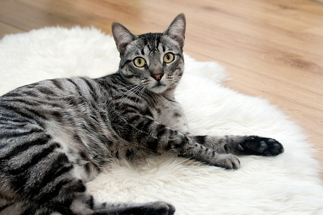

| Nuestros nuevos amigos | ||
|---|---|---|
| Bollito  |
Naranjito  |
Arigato  |
| ¡Hola! Me llamo Bollito y soy un gatito muy tierno y cariñoso. Me encanta acurrucarme y recibir mimos, pero también disfruto jugar con mis juguetes y explorar rincones nuevos. |
¡Miau! Soy Greiwo y no me dejo intimidar por nadie. Me gusta jugar rudo, trepar a los muebles y a veces hago travesuras. Aunque pueda parecer un poco gruñón, en el fondo quiero mucho a mi familia. |
¡Hola, al habla Arigato! A veces soy tranquilo y otras veces un torbellino de energía. Me gusta correr, dormir en los lugares más extraños y robarle la comida a mis humanos cuando no están viendo. |